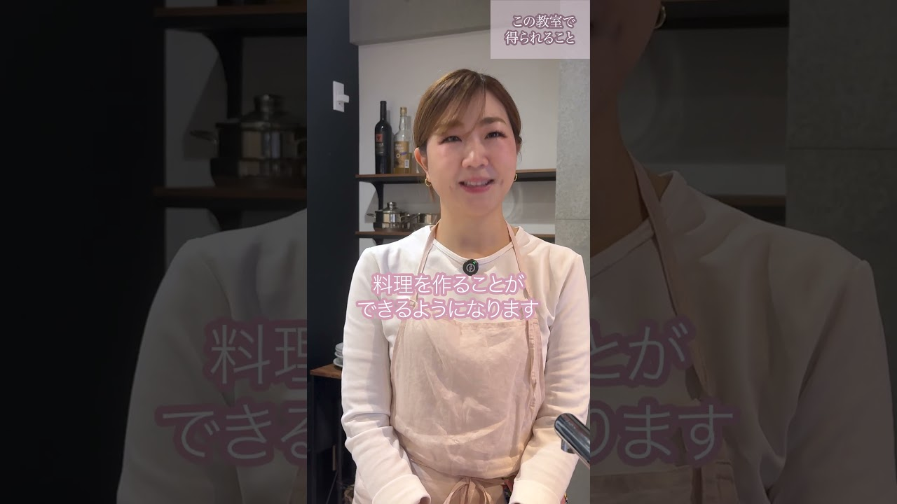

レシピ通りに作っているのに、なぜか毎回味が違う。
料理が、ずっと得意だったわけではありません。レシピ通りに作っても上手くいかず、「どうして？」とつまずいてばかりの時期がありました。
転機になったのは、レシピではなく食材そのものと向き合うようになったこと。一つひとつの理由がわかると、料理は驚くほど自由になります。
その経験を、教室でお伝えしています。マウントを取らない、一緒に考えるスタイルで。
オンライン料理教室
レシピで教えない、料理教室。
毎日のごはん、名もなき料理を楽しく作ろう🫧
「時短×本格的な味×応用力」が身につき、
毎日のごはんが変わる✨一生のスキルが身につく✨
こんな経験ありませんか？
レシピ通りに作っているのに、なぜか毎回味が違う。
献立を考えるのが憂鬱で、結局いつも同じメニューばかり。
料理本を買っても、ほとんど作らないままになってしまう。
自分の味付けに、いまひとつ自信が持てない。
作るたびに「わかった！」が増えていく。
そんな料理の楽しさ、一緒に重ねましょう🌿
W KITCHEN LAB. の3つの柱
「なぜそうするのか」がわかると、無駄な手間が省けます。名もなき毎日のごはんも、手際よくおいしく作れるようになります。
火加減・調味・下処理の「原理」を知ると、料理本に書いていない「プロの感覚」が自然と身につきます。
レシピに頼らず、冷蔵庫の中身から献立が組み立てられる力を育てます。一生使えるスキルが身につきます。
Lesson
まずはLINE登録で無料体験レッスンの案内をお届けします。
気軽に覗いてみてください。
Teacher

W KITCHEN LAB. 主宰 MAIKO
料理が、ずっと得意だったわけではありません。レシピ通りに作っても上手くいかず、「どうして？」とつまずいてばかりの時期がありました。
転機になったのは、レシピではなく食材そのものと向き合うようになったこと。一つひとつの理由がわかると、料理は驚くほど自由になります。
その経験を、教室でお伝えしています。マウントを取らない、一緒に考えるスタイルで。
講師紹介動画
（準備中）
プロフィール
敷居を下げながらも、確かな技術はそのままに。マウントを取らない親しみやすい指導で、料理が苦手な方から中級者の方まで、それぞれのペースに寄り添います。
LINE登録後の流れ
Official LINE
登録は無料、解除はいつでもできます。
気になったとき、気軽に覗いてみてください。
🔒 強引な勧誘・個人情報の第三者提供はしません